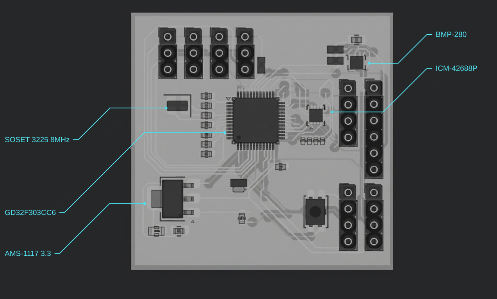
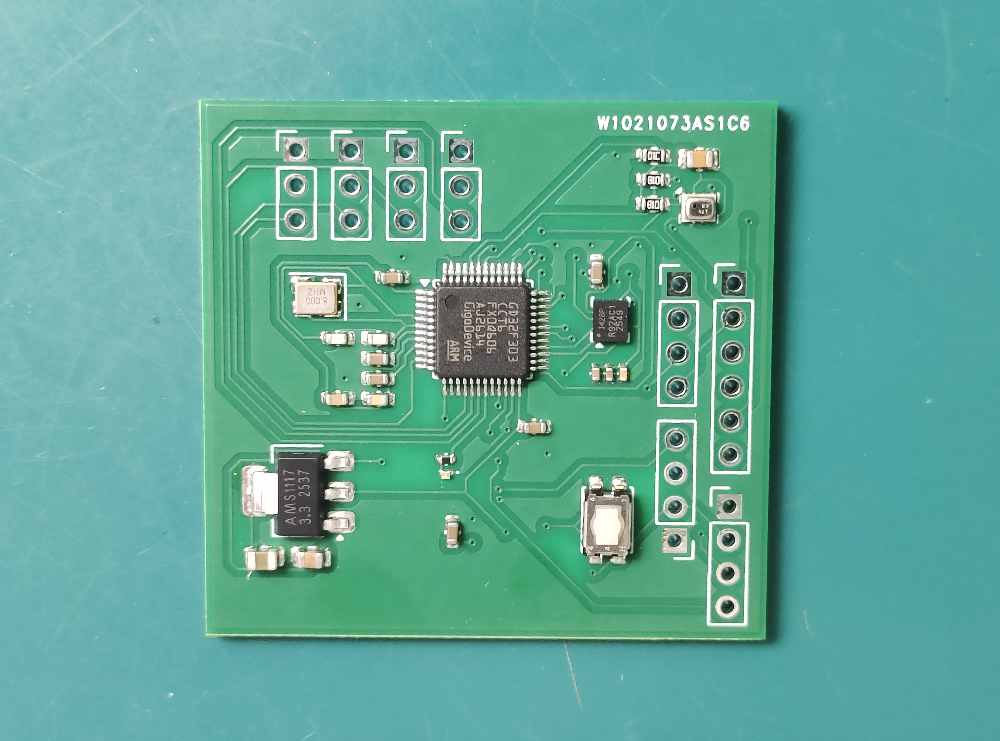

The F405 “Wing Mini” had already done everything asked of it — the modified build of INAV flashed clean, and each of the new flight modes functioned properly. By any rational mission-requirements analysis, there was no reason to replace it. So naturally, the next step was to design a worse one from scratch.
Pilot-3 is built around a GD32F303CC6 — a slower part, with a thinner peripheral set and less community tooling than the STM32F405 it’s replacing. On paper, it’s a downgrade in every dimension the aircraft cares about. But the GD32F303 shares its register map with the STM32F103, one of the most thoroughly documented, forum-dissected MCUs in the DIY drone world — offering a well-lit path for a custom design.
What Pilot-3 actually buys me isn’t better flight characteristics — it’s a stack I understand from the ground up, on hardware I’m free to reshape however the next drone iteration demands.
